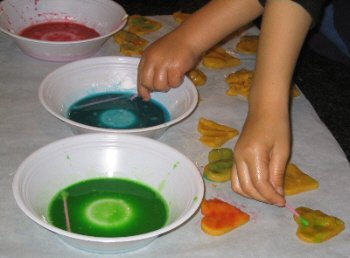
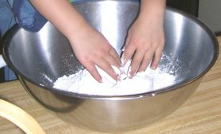
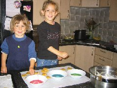

Kids can spend hours with this cookie painting activity! Painting sugar cookies with edible paint combines two enjoyable activities that children love! Take this opportunity to let your kids join in – measuring the flour and sugar, mixing, and even cleaning up! These fun cookies can be made year round for any reason and they also make great holiday presents when wrapped up in decorative paper or placed in a holiday-themed box! Use cookie painting recipes to paint almost any cookie. If you don't have time to bake - have your kids paint tea biscuits or graham crackers. Basic Sugar Cookie DoughIngredients: 3/4 Cup Butter 1 Cup Sugar 2 Eggs 1 Tsp. Vanilla 2 1/2 Cups Flour 1 Tsp. Baking Powder 1 Tsp Salt Mix the Butter, Sugar, Eggs and Vanilla. Blend in the Flour, Baking Powder and Salt. Cool the dough in the refrigerator for at least 1 hour. Roll dough and cut into shapes Arrange on a non-stick cookie sheet Bake cookies at 350F for 10 to 12 minutes Makes about 2 dozen cookies depending on the shapes and sizes…. Peanut butter cookie painting recipe There are different recipes and methods of painting cookies. Egg yolks and food coloring make paints that look shiny and vibrant when baked. There are two methods of decorating cookies by painting them – painting before you bake the cookies or painting after the cookies are baked. Painting un-baked cookies results in a matte finish while the second method makes a shiny painted cookie. Before you start...Refrigerate the cookie dough so it's nice and cold.Cover work surfaces with plastic table cloths. Set out rolling pins, cookie cutters, and other decorating tools in clear plastic cups. Mix the cookie paints and pour the colors into individual clear plastic cups with a paintbrush for each. Spoon small amounts of flour into a few clear plastic cups. You will need this during rolling to prevent sticking. Edible Cookie Paint Recipes for Decorating Un-baked CookiesEgg Yolk Based Paint This Cookie Paint is not as shiny but it's faster to paint the cookies before you bake them.Ingredients: 2 large egg yolks 1 teaspoon water or evaporated milk food coloring Separate the eggs. Pour the yolk into a cup and beat it with a fork until smooth. Add 5 to 6 drops of food coloring and beat until the color is evenly blended. Repeat with the remaining eggs and colors in separate cups for each color. Cornstarch Based PaintIngredients: 3 tablespoons cornstarch water food coloring Stir enough water into the cornstarch to make it runny. Add the food coloring. Encourage children to be as imaginative and creative as they like when shaping and painting. Let kids imagine that they are painting with watercolors and not to worry about making mistakes. All of the cookies will taste good no matter what they look like! Edible Cookie Paint Recipes for Decorating Baked CookiesShiny Cookie paint For best results - please let the cookies cool before you paint them!Ingredients: 2 Tablespoons Milk 2 Tablespoons Light Corn Syrup 2 Cups Powdered Sugar, sifted Food coloring Mix liquid ingredients together in a small bowl. Use a cup or small bowl for each color. Add the sugar. Add more milk if needed. If you have time, pour a small amount of glaze onto the cookies and allow it to dry for an hour – it will create a firm base for children to paint on top of. Thin the remaining glaze with a few drops of milk. Separate glaze into muffin tins and stir in food coloring. Paint cookies using the cookie paint with a clean paintbrush. Paint onto cookies using clean paint brushes. Cookie Paint dries slowly. Allow paint to dry before eating… if you can wait! | ![]()